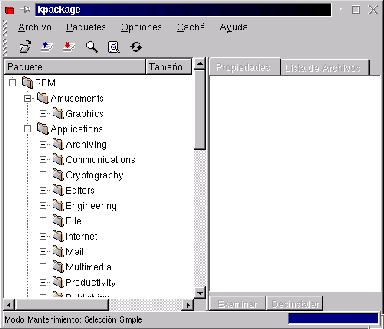
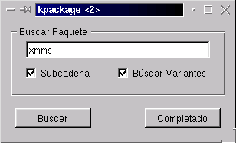
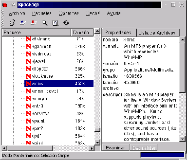
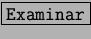
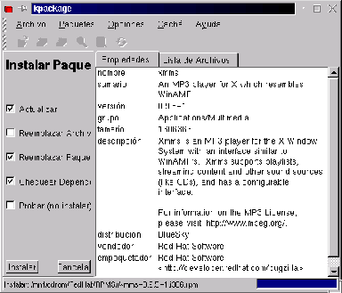
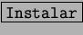
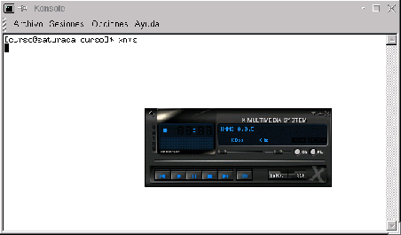

Next: Eliminación
Up: RPM y paquetes
Previous: RPM y paquetes
Índice General
Instalación
Uno de los propósitos que tiene el sistema de paquetes RPM es la
instalación de paquetes nuevos. Se puede encontrar todo el conjunto de
paquetes a instalar en el CD-ROM de GNU/Linux.
También se consiguen infinidad de paquetes en Internet listos para
bajar. Existen utilidades y sitios dedicados a encontrar paquetes de
un determinado tipo.
Por ejemplo si queremos utilizar el reproductor de mp3 llamado
``xmms'' y no se encuentra instalado:
- Insertamos el CD-ROM de GNU/Linux
- Si no se monta automáticamente, debemos ir a una terminal y
montarlo escribiendo mount /mnt/cdrom
- Ejecutamos el kpackage, desde una Terminal o
accediendo a través de [K-Utilidades-kpackage]
- Va a preguntar la clave del root, debido
a que los paquetes se hacen disponibles a todos los usuario no
tan sólo a uno.
- Una vez en el programa kpackage debemos ver una pantalla similar a
la figura 4.1
Figura 4.1:
Pantalla inicial del kpackage
|

|
- Buscamos el paquete ``xmms'', para eso vamos a [Archivo] [Buscar]
Paquete. (fig. 4.2).
Figura 4.2:
Función de búsqueda de paquetes
|

|
- Si está instalado va a aparecer con un icono de paquete que tiene
una ``R'' (de RPM). En este caso, elija otro paquete que no esté
intalado en la categoría NEW.
- En cambio si no está instalado, el icono es una N (de Nuevo) y
se puede ver información sobre el
paquete. (fig. 4.3).
Figura 4.3:
Vista de paquetes no instalados
|

|
- El botón  contiene detalles acerca de la instalación.
(fig. 4.4).
Figura 4.4:
Detalles sobre la instalación de paquetes
|

|
- Para instalar el paquete sólo hay que presionar el botón
.
En el caso de que no haya problemas ya se podría ejecutar el xmms
desde una terminal o consola como muestra la figura 4.5.
Figura 4.5:
Carga del xmms desde una consola
|

|
Para aquellos usuarios de la KDE 2.0 el proceso de instalación es casi igual
pero existen algunos matices que se deben tener en cuenta. Para ejecutar
kpackage podemos ejecutar kapackage desde un terminal en
el que previamente hayamos ejecutado su porque de otra manera
nos dejará ver los paquetes instalados pero no permitirá la instalación
de nuevos paquetes.
El entorno que nos presenta kpackage en la versión de KDE 2.0 es
parecido al de la KDE 1.1.x con lo que se puede aplicar todo lo visto
hasta ahora sin ninguna compliación.
Next: Eliminación
Up: RPM y paquetes
Previous: RPM y paquetes
Índice General
Proyecto Cursos - LuCAS - http://lucas.hispalinux.es/htmls/cursos.html